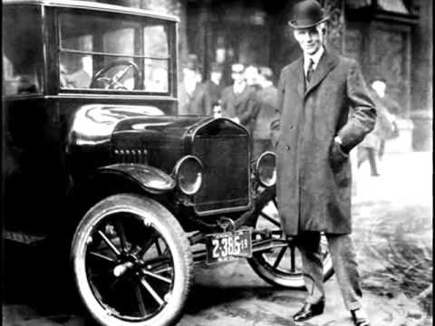
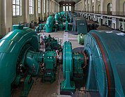

.jpg)
Origen
Las aplicaciones de esta ingeniería se encuentran en los archivos de muchas sociedades antiguas de todo el mundo. En la antigua Grecia, las obras de Arquímedes (287 a. C.-212 a. C.) han influido profundamente en la mecánica occidental y Heron de Alejandría (c. 10-70 d. C.), creó la primera máquina de vapor.1 En China, Zhang Heng (78-139 d. C.) mejora un reloj de agua e inventó un sismómetro, y Ma Jun (200-265 d. C.) inventó un carro con diferencial de engranajes. El ingeniero chino Su Song (1020-1101 d. C.) incorporó un mecanismo de escape en su torre del reloj astronómico dos siglos antes de que cualquier fuga se pudiese encontrar en los relojes de la Europa medieval, así como la primera cadena de transmisión.2
Durante los siglos VIII al XV, en la era llamada edad de oro islámica, se realizaron notables contribuciones de los musulmanes en el campo de la tecnología mecánica. Al Jazarí, quien fue uno de ellos, escribió su famoso "Libro del Conocimiento de ingeniosos dispositivos mecánicos" en 1206, en el cual presentó muchos diseños mecánicos. También es considerado el inventor de tales dispositivos mecánicos que ahora forman la base de mecanismos, tales como árboles de levas y cigüeñal.3
Un hito importante en la creación de la ingeniería mecánica sucedió en Inglaterra durante el siglo XVII cuando Sir Isaac Newton formuló las tres Leyes de Newton y desarrolló el cálculo. Newton fue reacio a publicar sus métodos y leyes por años, pero fue finalmente persuadido a hacerlo por sus colegas, tal como Sir Edmund Halley, para el beneficio de toda la humanidad.

Desarrollo de la ingeniería mecánica
Históricamente, esta rama de la ingeniería nació en respuesta a diferentes necesidades que fueron surgiendo en la sociedad. Se requería de nuevos dispositivos con funcionamientos complejos en su movimiento o que soportaran grandes cantidades de fuerza, por lo que fue necesario que esta nueva disciplina estudiara el movimiento y el equilibrio. También fue necesario encontrar una nueva manera de hacer funcionar las máquinas, ya que en un principio utilizaban fuerza humana o fuerza animal. La invención de máquinas que funcionan con energía proveniente del vapor, del carbón, de petroquímicos (como la gasolina) y de la electricidad trajo grandes avances, dando origen a la Revolución Industrial a mediados del siglo XVIII. Más adelante surgiría la producción en serie.
A principios del siglo XIX en Inglaterra, Alemania y Escocia, el desarrollo de herramientas de maquinaria llevó a desarrollar un campo dentro de la ingeniería en mecánica, suministro de máquinas de fabricación y de sus motores.4 En los Estados Unidos, la American Society of Mechanical Engineers (ASME) se formó en 1880, convirtiéndose en la tercera sociedad de profesionales de ingeniería, después de la Sociedad Americana de Ingenieros Civiles (1852) y el Instituto Americano de Ingenieros de Minas (1871). [4] Las primeras escuelas en los Estados Unidos para ofrecer una enseñanza de la ingeniería son la Academia Militar de Estados Unidos en 1817, una institución conocida ahora como la Universidad de Norwich en 1819, y el Instituto Politécnico Rensselaer en 1825. La educación en ingeniería mecánica se ha basado históricamente en una base sólida en matemáticas y la ciencia.5

Latinoamérica
México
Cuando los españoles habían llegado a México en la conquista, los aztecas ya habían construido varias obras ingenieriles, como por ejemplo varios diques que protegía a Tenochtitlan del Lago de Texcoco en caso de posibles inundaciones. Estas construcciones fueron destruidas por los conquistadores.6
En 1551 fue fundada la Real y Pontificia Universidad de México, sin embargo, los egresados eran religiosos, profesionales y académicos de la teología, derecho y medicina. Los ingenieros provenían de Europa para realizar las obras.
A finales del siglo XIX comenzó la industrialización en México. Con la llegada del ferrocarril, y la explotación de las minas, el país tomó un avance tecnológico. Esto se sumó a la explotación del petróleo, que necesitaba maquinaria para la perforación y para el transporte del crudo, además de la construcción de refinerías y oleoductos.
En 1792 se fundó el Real Seminario de Minería en México, considerada la primera escuela de ingenieros de Latinoamérica.En 1535 se fundó la primera Escuela para Varones que conformaba niveles de área minería, alfarería y agricultura. En 1857 se cambia el nombre expedido por el presidente Benito Juárez por Escuela de Artes y Oficios reconocido como técnicos mecánicos, Alfareros y agricultores. Posteriormente durante la Revolución Mexicana, se propuso que esta escuela tendría un nivel profe-sionista , así se le cambió el nombre a Escuela de Ingenieros Mecánicos y Eléctricos. En 1932 se crea la Escuela Superior de Ingeniería Mecánica y Eléctrica (ESIME) que se anexó al Instituto Politécnico Nacional iniciando con la impartición de cursos en 1936 con las carreras de Ingeniería Mecánica, Ingeniería Eléctrica, Ingeniería Aeronáutica e Ingeniería en Telecomunicaciones y Electrónica. Siendo la ESIME una de las escuelas más antiguas en México en el desarrollo tecnológico en el área Mecánica-Eléctrica.7
Chile
La primera central eléctrica fue la Central hidroeléctrica de Chivilingo, construida en Lota entre los años 1896 y 1897, para las minas de carbón de la zona.8 Fue construida mientras Isidora Goyenechea tenía al mando la conducción de las minas, luego del fallecimiento de su esposo Luis Cousiño.
Francisco González Villalobos, es el primer ingeniero mecánico titulado en Chile, egresado de la Universidad Técnica Federico Santa María en 1940,9 motivo por el cual tuvo la responsabilidad de convertirse en el especialista pionero en el país. En 1956 se creó la carrera de ingeniería mecánica en la Universidad de Concepción, la segunda ingeniería de dicha universidad, egresando la primera generación el año 1962. En el año 1965 se cambia el nombre por el de ingeniería civil mecánica.10 En 1966 se comenzó a dictar la carrera de ingeniería civil mecánica en la Universidad de Chile, y egresando la primera generación en 1970.11 En 2016 se comenzó a dictar la carrera de ingeniería civil en mecánica en la UTEM
Argentina
En Argentina la carrera se oficializó a nivel nacional en la Universidad de Buenos Aires. En la década del 50 se creó la Universidad Obrera, que ofrecía esta carrera de Ingeniería, tan ligada al proceso de industrialización que vivía esa época; esta Universidad deviene en la que hoy es la Universidad Tecnológica Nacional, de donde han egresado innumerable cantidad de ingenieros mecánicos. La educación privada cuenta con diferentes Universidades donde se desarrolla la carrera tales como el Instituto Tecnológico Buenos Aires (ITBA) o la Universidad de la Marina Mercante, universidades que también forman ingenieros en la rama mecánica. Si bien la carrera cuenta con una cantidad de materias que puede variar según el Plan de Estudios entre 36 y 45 asignaturas, posee un alto grado de complejidad para lograr la graduación. Un ingeniero mecánico puede realizar tareas como la reparación de la Floralis Genérica, realizada por el Ing. Salvador Sorbello en el año 2015, en Buenos Aires, frente a la facultad de derecho de la UBA.